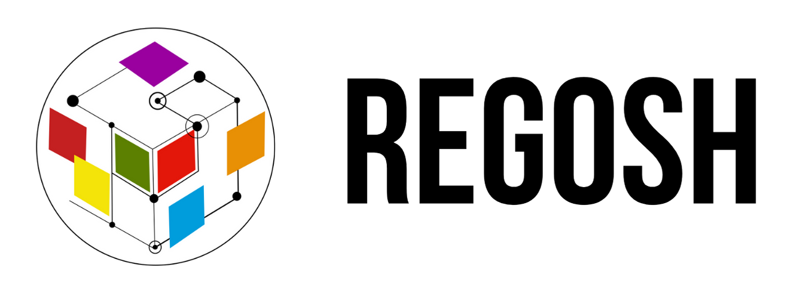

layout: true class: typo, typo-selection --- class: center <br>  #<span style="font-family: 'Bebas Neue'; color:#ba0c49;">Open Hardware for science and education in latin america</span> ###<span style="font-family: 'Bebas Neue';">regosh.libres.cc <br>@regosh_libre (<i class="ri-twitter-fill"></i>)</span> .abs-layout.right-5.top-85.right[Julieta Arancio<br>@cassandreces] .abs-layout.left-5.top-90.left[Open Hardware Summit @Home 2021] --- # <span class="oc-bg-violet-2">About us</span> .abs-layout.left-7.top-25.width-50.center[ .card.noborder.noround.m-0.width-90.height-100[.img[]]] .abs-layout.right-5.top-30.width-40.center[ .img[]] .abs-layout.right-5.top-70.width-40.center[.img[]] --- ## <span class="oc-bg-violet-2">low-investments</span> in S&T... <br> <i class="ri-terminal-line"></i> unequal access <i class="ri-terminal-line"></i> non-repairable equipment <i class="ri-terminal-line"></i> inadequate instruments <i class="ri-terminal-line"></i> non-customizable equipment <i class="ri-terminal-line"></i> dependency<br> .right[ ## ...+ <span class="oc-bg-teal-2">proprietary hardware</span> ] --- # Our proposal: <span class="oc-bg-violet-2">residencies</span> <br> #### <span class="oc-bg-teal-2">Useful locally</span><br>Using accessible materials and tools #### <span class="oc-bg-teal-2">Collaborative</span><br>Working and learning from each other during 3 weeks #### <span class="oc-bg-teal-2">Diverse</span><br>Participants from a diversity of interests & expertise <br> .abs-layout.p-xs.m-xs.top-77.right-2.width-37.oc-bg-black.opacity-80[.img[]] --- # Brazil, 2019 <br> .abs-layout.height-100.width-41.right-5.top-20[ .card.noborder.noround.m-0.width-99.height-100[.abs-layout.oc-gray-6[].img[]]] ## <span class="oc-bg-teal-2">26 people</span> ## <span class="oc-bg-teal-2">6 countries</span> ## <span class="oc-bg-teal-2">7 projects</span> .abs-layout.top-75.left-5.width-47[ .column-5.column-norule.column-gap-xs[ .card.frame.preview-win[ .img[] ] .card.frame.preview-win[ .img[] ] .card.frame.preview-win[ .img[] ] .card.frame.preview-win[ .img[] ] .card.frame.preview-win[ .img[] ] ] ] --- #.abs-layout.left-2.top-5[<span class="oc-bg-teal-2">Digital fabrication tools</span> <br>(POA/BSAS)] .abs-layout.p-xs.m-xs.bottom-0.right-30.width-40.oc-bg-black.opacity-100.oc-teal-2[.img[]] .abs-layout.p-xs.m-xs.bottom-40.right-0.width-40.oc-bg-black.opacity-100.oc-teal-2[.img[]] .abs-layout.p-xs.m-xs.bottom-0.left-0.width-15.oc-bg-black.opacity-80.oc-teal-2[.img[]] --- #.abs-layout.left-2.top-5[<span class="oc-bg-teal-2">Community science</span> <br>(POA/MZA)] .abs-layout.p-xs.m-xs.bottom-0.right-0.width-25.oc-bg-black.opacity-80.oc-teal-2[.img[]] .abs-layout.p-xs.m-xs.bottom-0.right-25.width-25.oc-bg-black.opacity-80.oc-teal-2[.img[]] .abs-layout.p-xs.m-xs.bottom-35.right-45.width-25.oc-bg-black.opacity-100.oc-teal-2[.img[]] .abs-layout.p-xs.m-xs.bottom-0.left-0.width-15.oc-bg-black.opacity-80.oc-teal-2[.img[]] --- ##.abs-layout.left-2.top-5[<span class="oc-bg-teal-2">Biomedical research</span> (Peru)] ##.abs-layout.right-2.top-5[<span class="oc-bg-teal-2">Open science with drones</span> (CH/AR)] ##.abs-layout.p-m.top-20.left-0.width-20.oc-bg-black.opacity-80.oc-teal-2[Gorgas Tracker] ##.abs-layout.p-m.top-20.right-0.width-20.oc-bg-black.opacity-80.oc-teal-2[Vuela] .abs-layout.p-xs.m-xs.bottom-0.left-0.width-35[.img[]] .abs-layout.p-xs.m-xs.bottom-35.left-20.width-25[.img[]] .abs-layout.p-xs.m-xs.bottom-0.right-0.width-35[.img[]] .abs-layout.p-xs.m-xs.bottom-35.right-20.width-25[.img[]] --- background-image:url(imgs/stamp.png) class: center, middle #<big><span style="font-family: 'Bebas Neue';">2020 Residency<br>Peru, biomedical devices</span></big> --- #<span class="oc-bg-teal-2">Debate sessions</span> .abs-layout.left-35.width-40.bottom-5[.img[]] --- #<span class="oc-bg-teal-2">Policy</span> .abs-layout.left-30.width-40.bottom-30[.img[]] --- #<span class="oc-bg-teal-2">Future challenges</span> #### Collaborative hardware development... <span class="oc-bg-violet-2">Remote</span> #### Connections with <span class="oc-bg-violet-2">industry</span>, promote open hw business models #### Strengthen our <span class="oc-bg-violet-2">partnerships</span> .east[.img[]] --- class: center, middle <br> ####<span style="font-family: 'Bebas Neue';">regosh.libres.cc <br>@regosh_libre (<i class="ri-twitter-fill"></i>)</span> .abs-layout.right-5.top-85.right[Julieta Arancio<br>@cassandreces] .abs-layout.left-5.top-90.left[Open Hardware Summit @Home 2021]